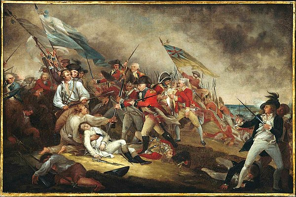

Battle of Bunker Hill

-
The Battle of Bunker Hill was fought on June 17, 1775. Although the majority of the battle was fought
on an adjacent hill called Breed’s Hill, this battle was known as Battle of Bunker Hill. Control over
these hills would have given control of Boston Harbor, which would have been used for logistics,
supplies, rearmament and reinforcements. Bunker and Breed’s Hill were strategic locations that were
necessary for the British as they were sending all of their supplies and reinforcements across the
Atlantic Ocean.
-
The British Empire were seen as the sole superpower in this time period. During the early stages of
the American Revolution, the British had more guns, soldiers and supplies as well as more advanced
equipment than the Continental Militia. As such, every single previous battle led to the defeat of
the militia. However, the Continental militia knew the landscapes of their homes very well. Knowing
that the British would try to take the hills for strategic advantage and the Boston Harbor, William
Prescott led a 1200 strong militia to take control of the hills 4 days earlier than the British. They
built strong defenses and fortifications in preparation for the impending British attack.
-
On daybreak of June 17, 1775, the British onslaught came. However, due to strong fortifications
and defenses built by the militia, the 3000 strong British army suffered more than 1000 casualties,
including 19 officers killed in actions and 62 more wounded. The battle was a British tactical victory
as they took the two hills and subsequently the Boston Harbor, but suffered heavy casualties.
-
The pyrrhic victory boosted militia morale and gave them belief that the British army were not invincible.